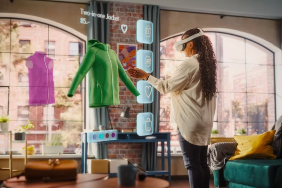

Short-Term Goals
- Improve my HTML and CSS skills.
- Create organized and responsive webpages.
- Complete more programming projects.
- Build a professional project portfolio.
- Become more comfortable using GitHub.
Future Goals
My main goal is to continue improving my computer science, programming, and web development skills. I want to understand both how websites function and how thoughtful layouts improve usability.
I also want to create projects that demonstrate my abilities and prepare me for future internships and career opportunities.
Return to the Home Page
My overall vision is to become skilled enough to create useful technology while also applying what I learn to my own business ideas. I want to develop websites and programs that are organized, efficient, visually appealing, and easy for people to use.